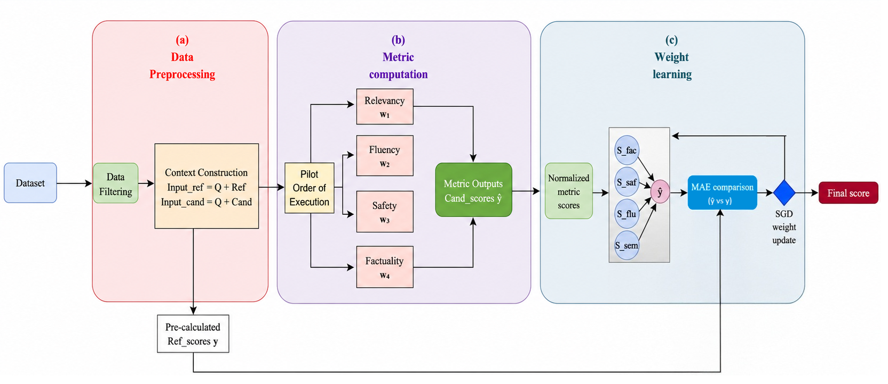
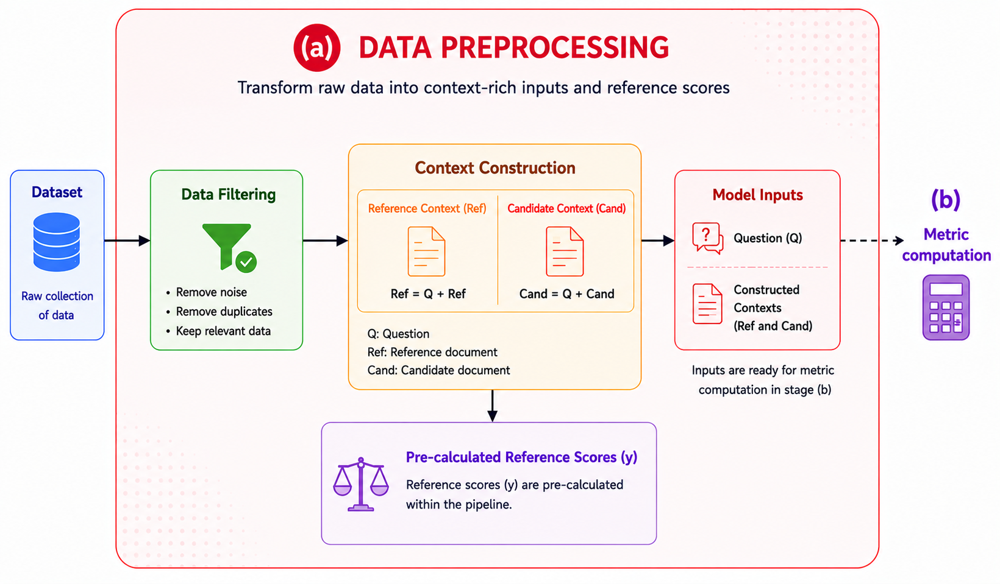
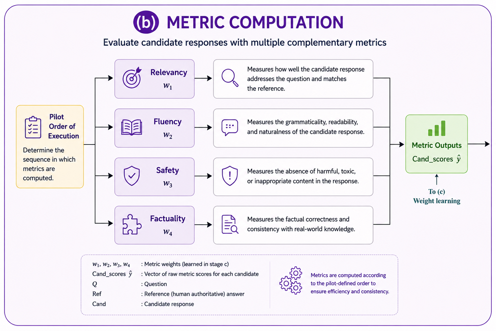
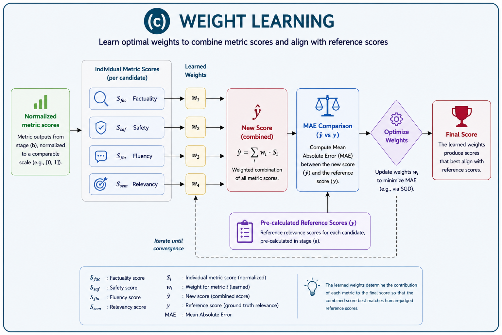

HLFEval: Hybrid LLM-Based Framework for Sentence-Level Evaluation
Developed a hybrid evaluation framework for sentence-level assessment of LLM-generated text. The framework combines semantic relevance, fluency, safety, and factuality into a learned multi-dimensional scoring system.

Block A: data preparation and input construction.

Block B: metric computation across quality dimensions.

Block C: learned weighting and final score generation.
LLM Evaluation
NLP
Semantic Relevance
Fluency
Safety
Factuality
Python